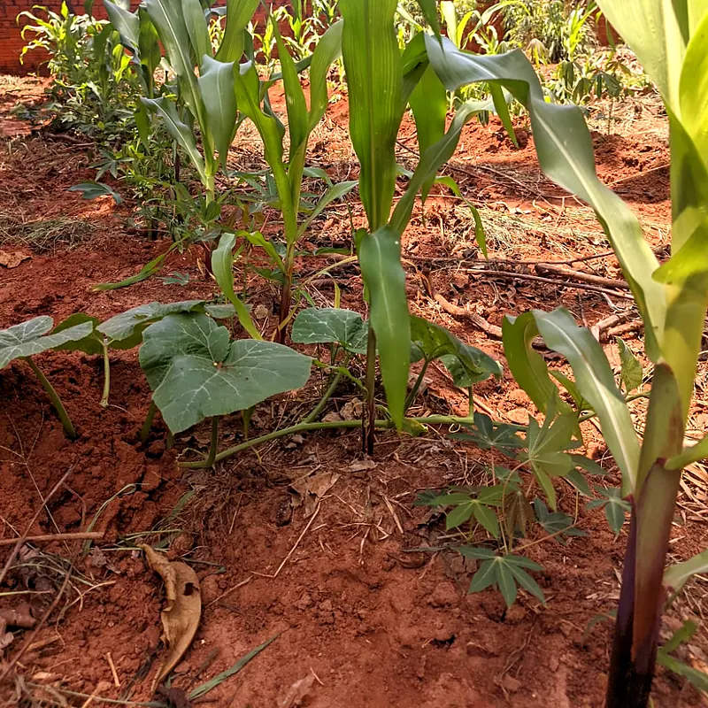

Minha história
RestritoA versão completa é pessoal e fica na zona segura.
Contato direto, currículo e a minha história estão na zona segura. É rápido: consentimento, um clique de verificação e pronto.
Desenvolvedor .NET · FullStack · DevOps
Às vezes engenheiro, programador, empreendedor e investidor.
Engenheiro de computação, pós-graduado em Segurança da Informação e em Big Data. Construo backends em .NET seguros, rápidos e escaláveis — e sigo compartilhando o que aprendo pelo caminho.
01 · Sobre Público
Comecei na TI em meados de 2014, como técnico de informática e, depois, no suporte técnico. De lá para cá passei pelo service desk de uma multinacional, me formei em Engenharia da Computação, migrei de vez para o desenvolvimento e concluí duas especializações.
Hoje desenvolvo em .NET, Next.js e PostgreSQL para um laboratório com filiais no Brasil e no Paraguai — da web ao mobile e à infraestrutura —, com agentes de IA no dia a dia. Fora do expediente, cuido dos meus próprios negócios — a loja Uaus, o iMenu e o Alphamira — e estudo o mercado financeiro.
Este site segue o que eu defendo no trabalho: o profissional é público; o pessoal fica na zona segura, com acesso verificado e registrado.
A versão completa é pessoal e fica na zona segura.
02 · Trajetória Público
Mais de uma década de TI, do suporte ao backend distribuído — com a formação acontecendo no meio do caminho.
– atual

Laborsolo do Brasilremoto
Laboratório de análise de solo com filiais no Brasil e no Paraguai. Desenvolvo sistemas web, mobile e desktop sobre bancos PostgreSQL compartilhados, incluindo LIMS e CRM.
–
Total Acessogrupo Diverti
Ticketeria de eventos de pequeno a grande porte — entre eles a ExpoLondrina, os ingressos do SPFC e Barretos.
–

Retornar
E-commerce de e-books e outros produtos que dão direito a concorrer a prêmios com números da sorte.
Descomplica
Criptografia, táticas de segurança e arquitetura de sistemas; dados relacionais e não relacionais em escala.
–
UNOPARLondrina-PR
Base em bancos de dados, linguagens de programação, cálculo, robótica e inteligência artificial.
–
Tata Consultancy Services
Multinacional indiana de consultoria em TI: metodologias ágeis, ITIL e ferramentas corporativas.
–
Primeiros passos na TI
Onde tudo começou: primeiro como técnico de informática, depois no suporte técnico.
03 · Habilidades Público
Agrupadas por área. O marcador indica a intensidade de uso — sem porcentagens inventadas.
APIs e serviços distribuídos em C#, do desenho da arquitetura ao código revisado em produção.
Relacionais e não relacionais, com a pós em Big Data por trás.
Microsserviços e serverless em produção desde 2021.
MBA na área e afinidade com criptografia — segurança pensada desde o desenho.
Código que outra pessoa consegue ler, testar e manter.
Do backend à tela: aplicações web em Next.js e as interfaces que conversam com as APIs.
Agentes de IA no ciclo de desenvolvimento e os servidores que sustentam os sistemas.
O dia a dia de um time ágil, do ticket ao deploy.
Liderar o time de backend me ensinou que código é a parte fácil.
04 · Projetos Público
Onde o código vira negócio — e onde eu testo, na prática, o que aprendo.
Loja de variedades com tudo por até R$ 30, em Tapira-PR. Além de sócio, desenvolvo o sistema que roda a loja: estoque, vendas, promoções e catálogo.
uaus.com.br“Cada pedido no seu lugar. Veja seus lucros.”
Cardápio digital e sistema de atendimento para bares e lanchonetes, do pedido ao fechamento da conta. Em fase de piloto, por convite.
imenudigital.com.brProjeto voltado a investimentos financeiros, onde o gosto pelo mercado encontra a engenharia de software.
alphamira.com.br · em breve05 · Interesses Público
O que me move quando o expediente acaba.
Fora do horário de trabalho, produzo mudas de frutíferas por enxertia, alporquia e estaquia, e cultivo milho, mandioca e abóbora em consórcio. É o que eu amo fazer longe da tela: me conecta com a natureza e ensina paciência — o resultado leva semanas, às vezes meses, para aparecer.




Estudo do mercado e robôs de investimento em MQL5.
Criptografia e proteção de dados — tema do meu MBA e assunto que sigo acompanhando.
Tirar ideias do papel: da loja física ao software próprio.
06 · Contato
LinkedIn e GitHub estão abertos a todos. Telefone, WhatsApp, e-mail e currículo ficam na zona segura.
Contato direto, redes pessoais e currículo em PDF ficam na zona segura.